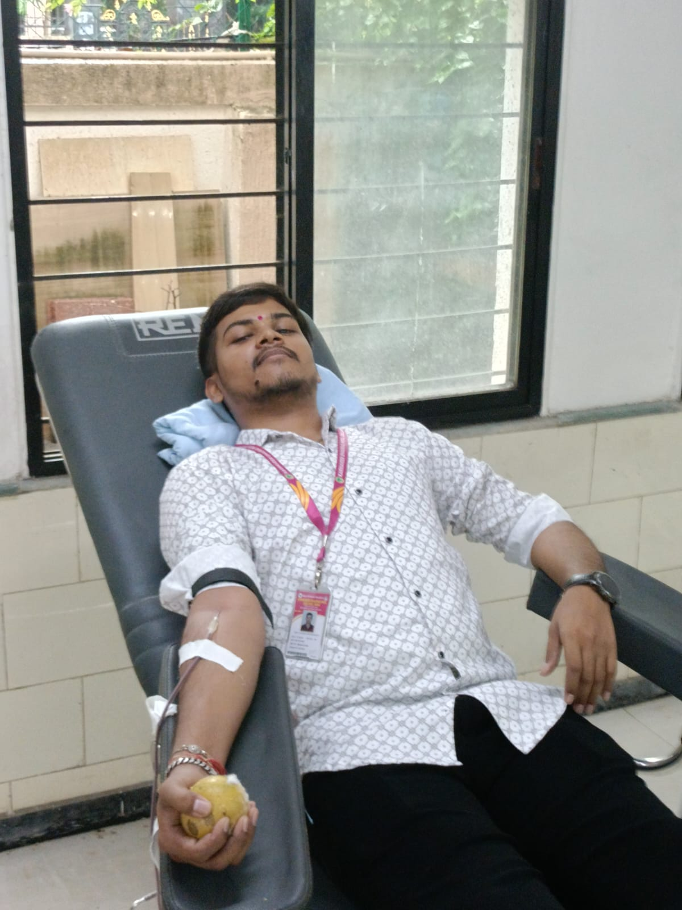

Rayat Shikshan Sanstha's
Karmaveer Bhaurao Patil College, Vashi
[ Empowered Autonomous ]
National Service Scheme
D-58
"Not Me But You"


Rayat Shikshan Sanstha's
[ Empowered Autonomous ]
D-58
"Not Me But You"
Blood donation is one of the most impactful social activities carried out by our NSS unit. Every year, we organize multiple blood donation camps to support hospitals and patients in need.
In the academic year 2025–26, we successfully organized 5 blood donation camps with the support of various organizations.
Two of these camps are conducted every year on special occasions like Karmaveer Jayanti and Shiv Jayanti in collaboration with NMMC Blood Bank.
The remaining camps are organized in collaboration with Jaslok Hospital, mainly to support children suffering from Thalassemia, who require regular blood transfusions.
Through these efforts, volunteers actively participate in saving lives and spreading awareness about the importance of blood donation.
❤️ One donation can save multiple lives.

NSS volunteers actively organize and manage blood donation camps in collaboration with hospitals and blood banks.
Camps are conducted with NMMC Blood Bank and Jaslok Hospital to ensure proper medical support and safe blood collection.
Volunteers motivate students and citizens to donate blood and explain its importance in saving lives.
Blood collected is used to support patients, especially children suffering from thalassemia who require regular transfusions.
Blood donation camps organized by NSS Unit D-58 have helped provide emergency blood support to hospitals and patients in need.
Through continuous awareness drives and volunteer participation, many students donated blood for the first time and understood the importance of social responsibility.
The collaboration with hospitals like Jaslok Hospital and NMMC Blood Bank helped ensure proper medical care and safe blood collection procedures.
Special support was extended towards children suffering from Thalassemia, who require regular blood transfusions for survival.
❤️ “A few minutes of donation can become a lifetime for someone.”
382+ blood bags collected successfully.
200+ volunteer participations across all camps.
Collaboration with NMMC Blood Bank and Jaslok Hospital.
5 successful camps organized during the academic year.

Blood cannot be manufactured artificially, and many patients depend completely on blood donors during emergencies, surgeries, accidents, and treatments.
A single blood donation can help save multiple lives by separating blood into components such as plasma, platelets, and red blood cells.
Regular blood donation also helps spread awareness about humanity, social service, and community responsibility among youth.
❤️ “Be someone’s reason to live.”
These camps were successfully organized by NSS Unit D-58 during the academic year 2025–26 with active participation of volunteers and support from collaborating organizations.
Glimpses from our blood donation camps, awareness drives and volunteer participation ❤️